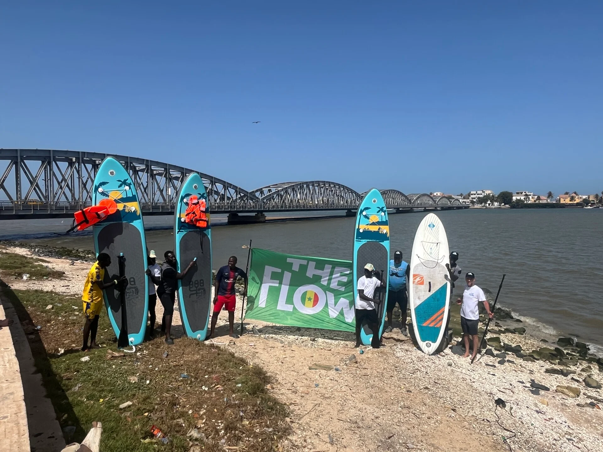
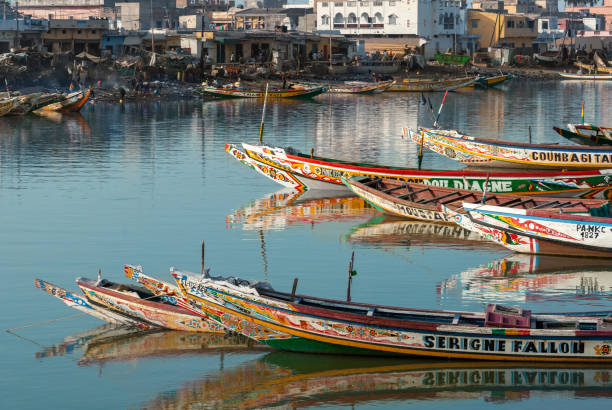
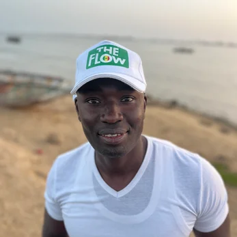

Montée des eaux et changements climatiques
Les évolutions du climat et les risques liés à l'eau soulignent l'importance de mieux protéger les territoires riverains et leurs communautés.
THE FLOW SÉNÉGAL · ASSOCIATION CITOYENNE
Une communauté engagée pour la protection du fleuve, de ses berges et de son environnement immédiat à Saint-Louis.
Une ambition commune : faire de la préservation du fleuve une responsabilité partagée.

The Flow Sénégal est une association citoyenne engagée dans la protection du fleuve Sénégal et de son environnement immédiat à Saint-Louis.
Notre démarche encourage la participation des habitants, des jeunes, des bénévoles, des associations et des partenaires à des initiatives en faveur d'un cadre de vie plus propre, plus sain et plus durable.
Au-delà des actions sur le terrain, nous souhaitons renforcer la sensibilisation environnementale et encourager chacun à prendre part à la préservation de ce patrimoine commun.
Découvrir nos programmesSituée au nord du Sénégal, Saint-Louis est une ville historique dont l'identité est profondément liée au fleuve Sénégal, à son estuaire et aux activités des communautés riveraines.
Le fleuve participe au paysage, à la vie quotidienne et à l'attractivité du territoire. Ses berges et les espaces qui l'entourent constituent un patrimoine naturel précieux qui mérite attention et protection.
Préserver cet environnement, c'est aussi encourager des comportements responsables, protéger les espaces fréquentés par les habitants et transmettre aux générations futures le respect de leur cadre de vie.
Agir avec nous
Saint-Louis, SénégalProtéger le fleuve et ses alentours, c'est prendre soin de notre territoire et des communautés qui y vivent.
Plusieurs enjeux environnementaux appellent à la vigilance et à une mobilisation collective autour du fleuve et de ses abords.
Les évolutions du climat et les risques liés à l'eau soulignent l'importance de mieux protéger les territoires riverains et leurs communautés.
Le recul du littoral représente un enjeu important pour les espaces côtiers, les activités humaines et la préservation des milieux naturels de la région.
Les déchets abandonnés sur les plages, les berges et les espaces publics dégradent le cadre de vie et nécessitent des actions de sensibilisation et de nettoyage.
Les espaces riverains ont besoin de pratiques respectueuses pour préserver leur qualité, leur usage collectif et leur valeur pour les générations futures.
Informer, mobiliser et agir ensemble permet de faire progresser les comportements responsables et de renforcer la protection de notre environnement.
Promouvoir une culture de responsabilité environnementale grâce à l'action citoyenne, à la sensibilisation et au partage.
Contribuer à la propreté des berges et des espaces riverains par des initiatives citoyennes adaptées.
Encourager les bons gestes et faire connaître les enjeux de la préservation du fleuve et de son environnement.
Réunir habitants, jeunes, bénévoles, associations et partenaires autour d'objectifs communs.
Favoriser l'éducation environnementale et transmettre aux nouvelles générations le respect du patrimoine naturel.
Agir ensemble et encourager l'entraide au service du bien commun.
Adopter des pratiques respectueuses du fleuve et de son environnement.
Donner à chacun la possibilité de contribuer à une action collective.
Transformer la volonté de protéger notre territoire en actions concrètes.
Nettoyages des berges, découverte du fleuve en paddle, initiation des jeunes : nos valeurs se vivent au quotidien.



« Notre engagement est de protéger le fleuve Sénégal, de préserver ses berges et son environnement immédiat, et de transmettre aux générations futures le respect de ce patrimoine naturel commun. »
Chaque personne peut contribuer à la protection du fleuve Sénégal. Rejoignez une communauté qui souhaite agir pour un environnement plus propre, plus sain et plus durable.
Participer à nos actions